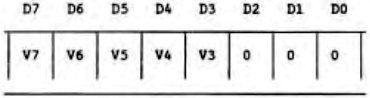
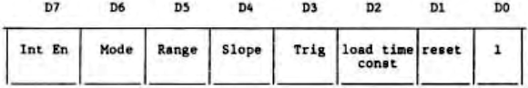

Scorpio News |
April–June 1987 – Volume 1. Issue 2. |
| Page 10 of 51 |
|---|
from the system Clock. If the System Clock is being used, it is routed through a prescaler, where it is divided by either 16 of 256. The counter can be set to count down from any number between 256 and 1. On reaching zero, the channel sends out a pulse on its Zero Count/Time Out (ZC/TOn) pin, except for channel 3 which lacks that pin. The counter can be caused to automatically reload the initial count everytime it reaches zero. The important event is the counter reaching zero, which can cause an output pulse on the ZC/TOn pin, an automatic reload of the counter ready to go again, end an interrupt if required.
The CTC, being capable of vectored interrupts is best used in that mode. A typical example ia the MAP CPU board, where channel 3 of the on-board CTC is configured to interrupt when the keyboard has a character ready. This is done by telling the CTC channel 4 that it is to count 1 transition on the CLK/TRG3 pin (the keyboard strobe), cause an interrupt, and automatically reload the count ready to go again.
In programming the CTC for a system using vectored interrupts, we must therefore supply a valid interrupt vector. This is the lowest of four consecutive slots in the interrupt service table, and is passed to channel 0. Channel 0 reorganises it as an interrupt vector because the lease three bits are 0 – typically the form of this vector is:
where the least byte of the address of the four word section of the interrupt table is V7V6V5V4V3000. Bite 2-0 are modified by the CTC adding in 000 for Channel 0, 010 for channel 1, 100 for channel 2 and 110 for channel 3, depending which originates the interrupt.
Then to program a channel of the CTC, a control byte and associated but optional parameters are written to the Channel Control Register. Each channel of the CTC can be programmed independently of the others. The channel recognises the control byte because bit 0 is always 1. The other seven bits of the control byte define differing alternatives from the channel’s operating modes. These bits have the following meanings:
These bits have the following meaning
| D7 = 1 – | Generate interrupt every time downcounter becomes zero. Before doing this, an interrupt vector must have been written to the CTC. |
| D7 = 0 – | No interrupt from this channel. |
| D6 = 1 – | Select counter mode. Down counter is decremented by each triggering edge of the external clock from CLK/TRG pin. No prescaler used. |
| D6 = 0 – | Select timer mode. System clock feeds through the Prescaler, thence
to the Down Counter. The ZC/TOn pin is pulsed at a frequency of
tc*P*TC, where tc is system clock period, P is prescaler factor of 16
or 256, as set by bit 5, and TC is the time constant data word. |
| D5 = 1 – | is defined only in timer mode. Prescaler = 256 |
| D5 = 0 – | is defined only in timer mode. Prescaler = 16 |
| Page 10 of 51 |
|---|